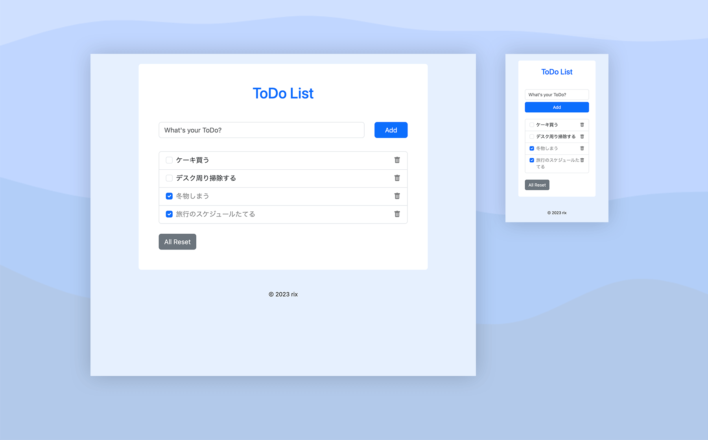

and-rix About me Skills Works ToDo List application  Date 2023/3 Skills VScode HTML Bootstrap Javascript ReactやNext.jsを学習するにあたりJavascriptの知識があまりなかったため、基本を学ぶためにVanilla JSで製作したToDoListアプリです。製作はこちらの動画を参考にしつつ、追加ボタンやチェックボックス表示、タスク削除ボタン、タスクが無いときに画像を表示させるなど、+αの機能を実装しています。アプリはこちら。 Comment ループ処理やオブジェクトと配列の違い、LocalStorageへの保存のタイミング、値へのアクセスの仕方を理解するのに苦労しました。 次はReactやNext.JSでToDoListアプリを製作し、書き方の違いについて学んでいければと思っています。
Comment
ループ処理やオブジェクトと配列の違い、LocalStorageへの保存のタイミング、値へのアクセスの仕方を理解するのに苦労しました。 次はReactやNext.JSでToDoListアプリを製作し、書き方の違いについて学んでいければと思っています。